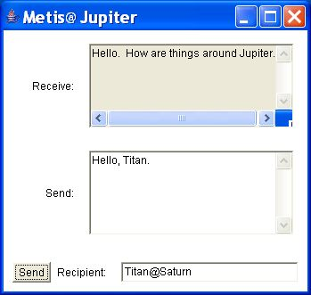
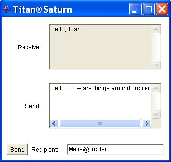

| Yaak Home | Yaak Tutorial | Yaak API Docs | Previous: Configurable Agents | Next: Agent Behavior |
Yaak is a messaging-oriented agent framework. In particular, Yaak is designed to transport messages, and their payload, at virtually the full capability of the network I/O primitives for the Java runtime environment in question. The Yaak framework, specifically, the container implementation of each agent context, adds only a few method calls to the message transport and delivery process. Note that the Overview discusses Yaak's messaging architecture. This section presents Yaak messaging with source code examples.
Given reasonably good performance for messaging, with Yaak the developer is free to adopt a modern, event-driven programming style, as with graphical toolkits such as the X toolkit, Java's AWT/Swing APIs, and others. The difference, of course, is that with a graphical application the event-driven operations take place within the local runtime environment, not over the network. Yaak's philosophy is that an asynchronous, event-driven paradigm is ideal for highly symmetric, distributed applications.
With Yaak, messages among agents are roughly analogous to the asynchronous events generated by graphical toolkit components. Thus, an agent in one context can register as a listener for events taking place in another context. In this environment, however, the messaging services provide the notification mechanics. With Yaak (as with JMS implementations) there are two messaging styles:
From one perspective, Yaak could substitute for a messaging-oriented middleware (MOM) product. The distinction with Yaak, relative to JMS implementations, is that the messaging endpoints are agents, not POJOs. With JMS MOM implementations, typically the receiving endpoint is either an anonymous class or a separately defined class that implements the MessageListener interface (that is, POJOs). Of course, with Yaak, you must define a similar "receptor" for the message, but it exists within the agent paradigm.
To a degree, Yaak can serve as a pretty good MOM system, and is easier to use than JMS-based messaging products because the set-up operations are trivial compared to those for JMS. On the other hand, it is important to recognize that Yaak is not nearly as sophisticated as JMS implementations, especially with respect to durable subscriptions, message persistence, and other "server-oriented services."
As mentioned, Yaak is a messaging-oriented agent framework. The first evidence of this orientation is the ease of access for its messaging services. Compared to JMS, there are essentially no set up operations. For example, the following code segment sets up a context and adds two agents, with one registering to receive messages and the other agent subsequently sending a message:
context = AgentSystem.createAgentContext("SomeContext");
try {
mary = context.createAgent("MyTestAgent", "Mary");
tom = context.createAgent("MyTestAgent", "Tom");
tom.registerForMessages(new MessageListener() {
public void onMessage(Message message) {
// process message
}
});
}
catch (AgentException e) {
...
}
...
try {
mary.sendMessage("Tom@SomeContext", new Message("Hello, Tom."));
}
catch (CommunicationException e) {
...
}
As with JMS, it is still necessary to define how a recipient handles an incoming message, in this case, with an anonymous class definition. On the other hand, there are no other set-up operations. Specifically, it is not necessary to manage JNDI-based topics and queues. But, again, Yaak's messaging services are not as sophisticated as those provided by JMS implementations.
From another perspective, the philosophy is simply different. With Yaak, messaging is agent-oriented; thus, the domain-specific partitioning of messages, message types, and operations is handled by setting up multiple agent contexts, as necessary, each with the requisite agents to handle the distributed application logic.
Agent contexts, despite their work on behalf of agents, are relatively lightweight compared to JMS components such as connections, sessions, topics, and queues. From this perspective, agent-based messaging is efficient and relatively elegant in terms of set-up and per-message operations, yet less robust than JMS messaging.
With Yaak, messages have the type yaak.agent.communication.Message, which extends yaak.agent.communication.Payload, which implements java.io.Serializable. There is no limit on message content, specifically, no limit on message length. As mentioned, the performance issues related to potential message content are a function of the communications server. If the communications server handles long messages efficiently; Yaak will handle long messages efficiently.
The public signatures for the Message constructors are:
Message(Message message);
Message(Serializable sObj);
The first signature implies that you can extend Message, but there is little reason to do so, other than logic in the receiver that processes messages based on their type. Note, however, that this approach is still possible without extending Message because the receiver can retrieve and then evaluate the message payload:
...
Object payload = message.getObject();
...
A developer could use the instanceof operator to determine payload type, but this approach is generally discouraged in modern software development because it leads to conditional code blocks, which often lead to ongoing maintenance issues.
There are other message-related convenience methods, for example, methods for determining whether the message arrived as a result of a broadcast (publish/subscribe scenario) or a P2P communication from another agent.
There is nothing about creating a message that can throw an exception; hence, you can do so outside of a try-catch block. On the other hand, both sending and publishing messages can result in exceptions and thus require exception handling.
Earlier sections, including the Overview, illustrate one agent sending a message to another, for example:
mary.sendMessage("Tom@SomeContext", new Message("Hello, Tom."));
This section illustrates Yaak's variation on publish/subscribe messaging, which is straightforward but somewhat less powerful than JMS publish/subscribe messaging.
Suppose a distributed application component has created multiple agents within multiple contexts:
jupiter = AgentSystem.createAgentContext("Jupiter");
saturn = AgentSystem.createAgentContext("Saturn");
...
a = jupiter.createAgent(MyTestAgent.class, "A");
b = jupiter.createAgent(MyTestAgent.class, "B");
c = jupiter.createAgent(MyTestAgent.class, "C");
a.registerForMessages(new MessageListener() { ... });
b.registerForMessages(new MessageListener() { ... });
c.registerForMessages(new MessageListener() { ... });
...
d = saturn.createAgent(MyTestAgent.class, "D");
e = saturn.createAgent(MyTestAgent.class, "E");
d.registerForMessages(new MessageListener() { ... });
e.registerForMessages(new MessageListener() { ... });
...
In this case, an agent, for example, agent "C", can publish a message to a single agent, which is equivalent to the P2P (agent-to-agent) messaging provided by the sendMessage() method:
c.publishMessage("A@Jupiter", new Message("Hello, A."));
More in the spirit of "publishing," however, agent "C", can publish a message to all agents within (at?) "Jupiter" using the following recipient specification:
c.publishMessage("@Jupiter", new Message("Hello, all."));
That is, because no agent name precedes "@Jupiter", the message is published to all agents hosted within "Jupiter", assuming that they register to receive messages.
Also, there are a couple of convenience mnemonics that represent "all agents within the agent's local context:"
c.publishMessage("@", new Message("Hello, again."));
c.publishMessage("", new Message("Goodbye, all."));
Of course, an agent can publish a message to all agents within another context:
c.publishMessage("@Saturn", new Message("Hello, everyone at Saturn."));
The target context can be within the same distributed application component (the same Java runtime environment), in which case the communications are optimized as method calls. Or, the target context can be within another distributed application component, which implies network communications. In either case, the process is transparent to the developer.
Parenthetically, an earlier framework (the Taco framework) employed Uniform Resource Locators (URLs) for agent context naming, for example, "taco://subdomain.domain.com/TheContextName". With Yaak, however, agent context names are completely logical, which is generally much simpler, but the developer has the burden of choosing context names across distributed application components so that there are no naming conflicts. This approach is especially convenient for military tactical networks, as well as distributed sensor networks, where fully qualified domain names (FQDNs) for network nodes typically do not exist.
An application, in effect, can provide a limited form of message filtering via the message listeners registered with each agent. On the other hand, in order to support certain domain-specific, agent-level (that is, agent-controlled) message filtering operations, an agent must actually receive a message. Otherwise, the agent could not determine if a message meets its criteria, because the agent itself is "in charge of its own logic." Thus, once a message is received, it is straightforward for an agent to screen its messages as part of its behavioral logic relative to its current (and dynamic) state.
At the context level, certain performance optimizations can be made at runtime by dynamically registering, unregistering, and re-registering message filters. In order for an agent context to screen messages on behalf of its agents (a form of big-brother behavior), it must receive the messages and evaluate them (their "worth," whether or not they meet established criteria, and so on.) One fundamental example of filtering at the context level is basic message delivery to legitimate recipients. An agent context receives messages designated, potentially, for its "constituents." If the message is deliverable, that is, if the intended recipient exists, the agent context normally delivers it.
The term message filtering, however, is normally reserved for conditional delivery criteria above and beyond whether or not the message recipient actually exists. At the context level, it is quite useful to provide a message filtering capability as a convenience for the software developer (the application), so that the developer can turn on and off delivery to agents within a context as domain-specific conditions vary, perhaps, over time.
With Yaak, context-level message filtering is handled by registering an implementation of MessageFilter:
context.registerDefaultMessageFilter(new MessageFilter() {
public boolean allow(Message msg) {
// logic to filter/accept messages
}
});
For example, suppose that a context wanted to filter messages based on the source of the message (the sender). The following filter allows messages (only) from agent Roberto:
context.registerDefaultMessageFilter(new MessageFilter() {
public boolean allow(Message msg) {
AgentAddress source = msg.getSource();
String agentName = source.getAgentName();
return agentName.equals("Roberto");
}
});
For clarity, the previous code exhibits one operation per line. Of course, this filter could be implemented in a single expression:
context.registerDefaultMessageFilter(new MessageFilter() {
public boolean allow(Message msg) {
return msg.getSource().getAgentName().equals("Roberto");
}
});
The important points are (1) the filter should specify what to allow, not what to disallow, and (2) the allow() method states its filtering criteria as a Boolean value. Behind the scenes, when a message filter is registered with a context, the context verifies each message before passing it on to the target agent (the recipient).
Note that you can register only one filter per context, but that the filtering criteria can be arbitrarily complex--any criteria that can be coded within the allow() method, for example, "Mary may receive messages from Joe, but only after 7 PM, and provided that she has completed her homework, worked two hours at her part-time job, taken out the trash, and picked up her little brother from soccer practice." This approach ensures that the developer handles all filtering directly, as opposed to registering multiple filters that could have unanticipated interactions, leading to unintended consequences.
At the agent level, in addition to conditional processing of messages via a message listener, it is also possible dynamically to register and unregister one filter per agent:
agent007.registerFilterForMessages(new MessageFilter() {
public boolean allow(Message msg) {
return msg.getSource().getAgentName().equals("Agent021");
}
})
Again, the filtering criteria do not have to be limited to restriction of messages based on the message sender--any domain-specific criteria are possible.
At the risk of placing too much emphasis on messaging, this section illustrates the power of Yaak messaging by implementing a simple chat application. The main point is to illustrate the power we get from Yaak's agent messaging for basic network communications. The class yaak.test.agent.communication.XTestAgentChat from the Yaak software distribution implements a graphical application with the AWT toolkit and uses one agent and one context for communication. This application is approximately 150 lines of code, more than 80 percent of which implements the graphical interface. This section presents only the relevant segments.
The agent and context are defined in the following code segment:
context = AgentSystem.createAgentContext(contextName);
try {
agent = context.createAgent(
yaak.test.agent.MyTestAgent.class, agentName);
agent.registerForMessages(new MessageListener() {
public void onMessage(Message msg) {
receiveMessage.setText(((StringMessage) msg).getText());
}
});
}
catch (AgentException e) {
...
}
The variables agentName and contextName are initialized from command-line arguments. Starting two applications, each with different agent and context names, is necessary to avoid name clashes. The variable receiveMessage is the the text area in which incoming messages are posted.
The code for implementing distributed communications follows:
ActionListener sendIt = new ActionListener() {
public void actionPerformed(ActionEvent ae) {
try {
String target = recipient.getText();
if (target.length() > 0) {
agent.sendMessage(new AgentAddress(target),
new StringMessage(sendMessage.getText()));
}
}
catch (CommunicationException e) {
YaakSystem.getLogger().fine("Cannot send message.");
e.printStackTrace();
}
}
};
This code segment defines an action listener that is executed when the user clicks the "Send" button. Note that it simply grabs the context from the text area (sendMessage) and sends it to the recipient named in the text field (recipient).
A screenshot from the first application illustrates the graphical components and the messages:

The first application represents one communication endpoint, in this case, Metis (currently circling Jupiter). Metis sends a message to Titan (currently circling Saturn). Titan receives the message and responds to Metis:

In the process of illustrating the simple mechanics of agent messaging, it is easy to forget the big picture. Yaak provides agent messaging as an enabling capability for symmetric distributed application components that interact asynchronously. Thus, agents in one distributed application component can request services from one or more agents in another application component(s), and then wait in an asynchronous manner for those agents to deliver their services. The distributed nature of this interaction is virtually transparent, except for the logical agent address specified in each message.
So far, it should be clear that (1) agents are easy to create and (2) messages are easily sent among agents. One of the real values of this power of distributed interaction among agents is distributed management of agents by other agents (coordinating agents). The coordinating agents could function as delegators of authority, or facilitators of services. With only the agent functionality discussed so far, a developer can already implement distributed delegation of authority and facilitation of services. Nevertheless, Yaak also includes additional classes to simplify the process of managing agents that register for various distributed services.
Yaak's service model is described in subsequent sections. The distributed management of cooperating agents requires control structures for managing the interacting processes. Thus, before addressing higher level tasks such as coordinating services of agents distributed throughout multiple application components, it is necessary to describe Yaak's model for defining and executing agent operations. At this point, however, it is important to reiterate that a small corps of functional models work together to truly enable distributed, event-driven (agent- and message-oriented) computing:
The next section addresses Yaak's support for agent behavior.